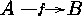

Xy-pic User's Guide 


| character:
$\xymatrix@1{A\ar[r]|f&B}$ will set .
If you just want an empty break you should use the special
\hole break:
the arrow was typeset by including $\xymatrix@1{ A\ar[r]|\hole & B }$ in the
text.
A different use of breaks is to place a label somewhere in a diagram
outside the normal matrix mesh: this is
accomplished by "breaking" an invisible arrow obtained using
the @{} arrow style: the square
was typeset by
\xymatrix{\ar @{} [dr] |{=}
A \ar[d] \ar[r] & B \ar[d] \\
B \ar[r] & C }
Xy-pic User's Guide